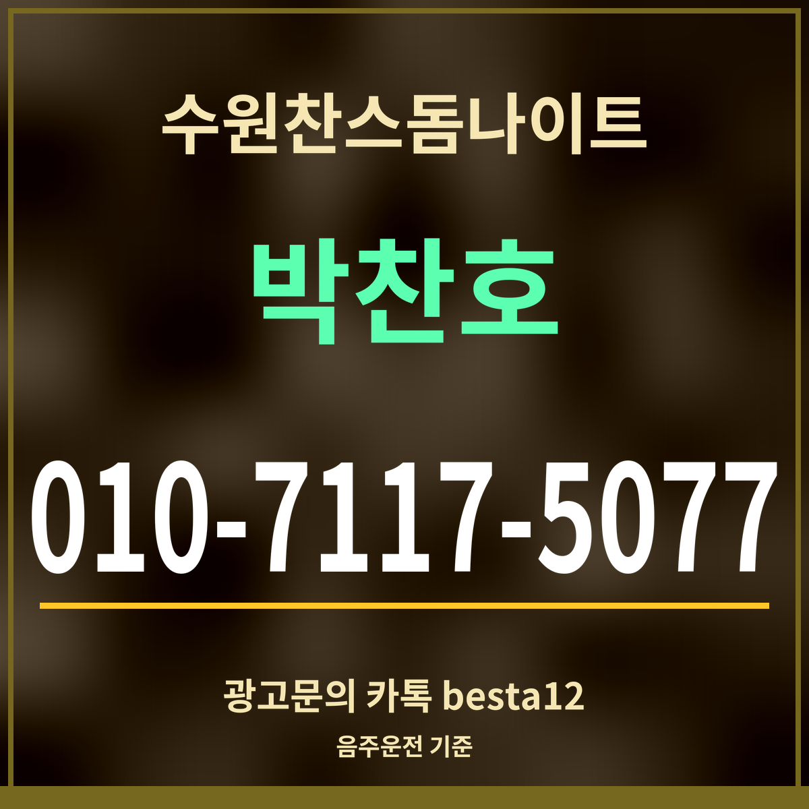

광고19세 미만 출입 금지
수원찬스돔나이트 차 가져가면, 음주운전 기준 0.03% 확인
기준 출처: 법제처 찾기쉬운 생활법령정보 「운전자 운전 금지 사항」(8월 15일 기준 · 12월 3일 시행 개정 반영 전)

한 줄 답: 혈중알코올농도 0.03% 이상이면 운전이 금지됩니다. 0.08% 이상이면 면허가 취소됩니다. 술을 마실 계획이면 차는 두고 오거나 대리운전을 미리 정하세요.
면허 처분과 벌칙
| 혈중알코올농도 | 면허 | 벌칙 |
|---|---|---|
| 0.03% 이상~0.08% 미만 | 1년 이내 정지 · 벌점 100점 | 1년 이하 징역 또는 500만원 이하 벌금 |
| 0.08% 이상~0.2% 미만 | 취소 | 1년 이상 2년 이하 징역 또는 500만원 이상 1천만원 이하 벌금 |
| 0.2% 이상 | 취소 | 2년 이상 5년 이하 징역 또는 1천만원 이상 2천만원 이하 벌금 |
차를 가져왔다면
수원찬스돔나이트는 카카오맵에 무료 주차가 표시되어 있어 차로 오기 쉽습니다. 그만큼 돌아갈 때를 먼저 정해 두는 것이 중요합니다. 대리운전을 부를지, 차를 두고 택시로 갈지 들어가기 전에 정하세요.
「조금만 마셨다」는 느낌과 수치는 다를 수 있습니다. 한 잔이라도 마셨다면 운전하지 않는 것이 가장 확실합니다. 법제처 페이지 상단에는 2026년 12월 3일 시행 개정이 아직 반영되지 않았다는 안내가 있으니, 바뀐 기준은 그 뒤에 다시 확인하세요. 대리운전 요금은 업체와 거리마다 달라 여기에 적지 않았습니다. 수원찬스돔나이트 담당에게 미리 물어 두면 부를 곳을 정하기 쉽습니다.
자주 묻는 것
몇 %부터 운전하면 안 되나요?
혈중알코올농도 0.03% 이상이면 운전이 금지됩니다.
혈중알코올농도 0.03% 이상이면 운전이 금지됩니다.
면허가 취소되는 기준은요?
0.08% 이상이면 면허가 취소됩니다.
0.08% 이상이면 면허가 취소됩니다.
차는 어떻게 하나요?
대리운전을 부르거나 차를 두고 택시로 돌아가세요. 주차 가능 시간은 담당에게 확인하세요.
대리운전을 부르거나 차를 두고 택시로 돌아가세요. 주차 가능 시간은 담당에게 확인하세요.
한 줄 정리: 0.03%부터 운전 금지 — 수원찬스돔나이트에 차로 왔다면 대리나 택시를 먼저 정하세요.
주차 정보는 무료 주차·시설에 있습니다.
이 페이지는 광고이며, 업소 제공 정보를 받아 실었습니다(담당 박찬호). 확인일 2026-09-27.